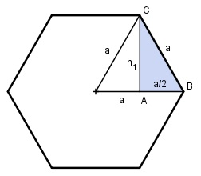

Aufgabe 52 Berechnen Sie das Volumen V eines Prismas mit einer Höhe h von 5 cm und einem regelmäßigen Sechseck mit einer Seitenlänge a von 3 cm als Grundfläche.  Das regelmäßige Sechseck besteht aus 6 gleich großen gleichseitigen Dreiecken mit der Fläche G: V = 6 * G * h a * h G = ------- 2 Satz von Pythagoras im Dreieck ABC: a² = (a/2)² + h1² |-(a/2)² h1² = a² - (a/2)² h1² = a² - a²/4 3 h1² = --- a² |√ 4 a 3 cm h1 = --- * √3 = ------- * √3 = 2,6 cm 2 2 3 cm * 2,6 cm G = ---------------- = 3,9 cm² 2 V = 6 * 3,9 cm² * 5 cm = 117 cm³